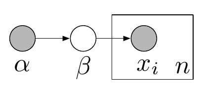
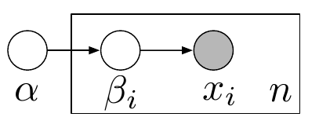
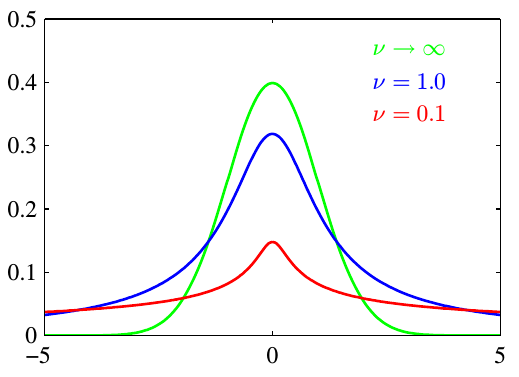
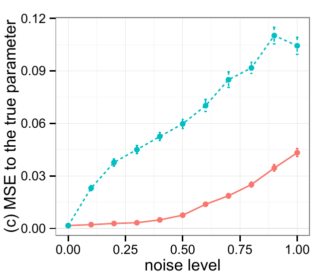
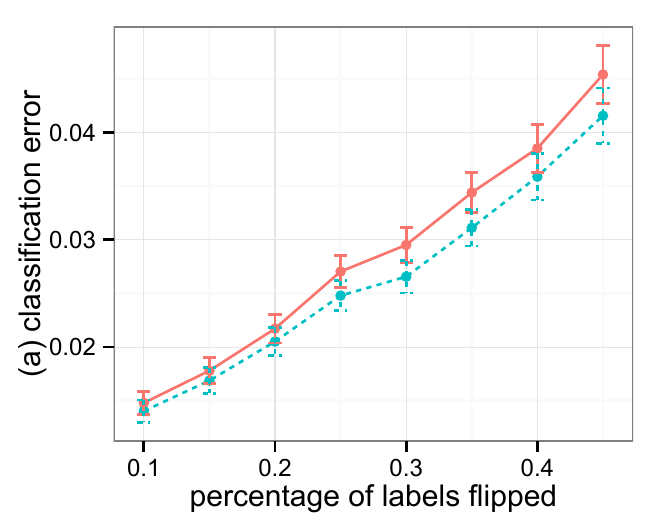

$$p(\beta,\mathbf{z},\mathbf{x}) = \underbrace{p(\beta|\alpha)}_{\text{global}} \prod_{i=1}^n \underbrace{p(z_i|\gamma)}_{\text{local}} p(x_i|\beta,z_i)$$
… all models are wrong …

\(\begin{align} p(x_i|\alpha) &= \int p(x_i|\beta_i) p(\beta_i|\alpha) d\beta_i \\ &= \int \mathcal{N}(x_i|\mu,\sigma_i)\; \text{Gam}^{-1}(\sigma_i|\alpha) d\sigma_i \end{align}\)
$$ p(x_i|\alpha) = \text{Student-t}(x_i|\mu,\alpha = (\lambda,\nu) ) $$ 

$$ y_i | x_i \sim \text{Bernoulli}(\sigma(\omega^T x_i)) $$ 